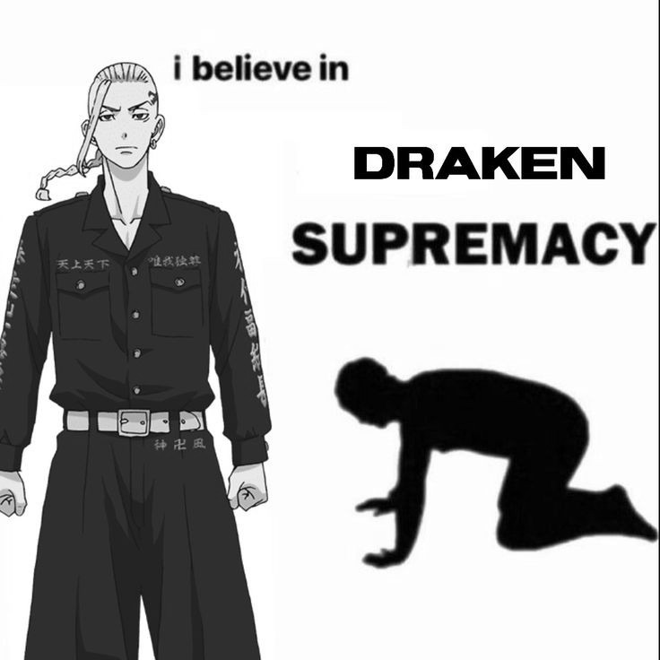

draken
Ken Ryuguji (龍りゅう宮ぐう寺じ 堅けん, Ryūguji Ken?), or Draken (ドラケン, Doraken?), is a founding member and the former Vice-Leader (副総長, Fuku Sōchō?) of the Tokyo Manji Gang. In a past timeline, he became a member of the motorbike gang Brahman.
Draken is a muscular teenager who is exceptionally tall for his age. His head is shaven on the sides and back to expose his signature dragon tattoo on his left temple. His blonde hair is long on the top of his head and kept in a neat braid. He leaves a few strands of hair loose in the front.
He is confirmed to be quite lean and has chiseled abdominal muscles. Takemichi remarked that his body does not seem like that of a teenager. Draken has a scar on the left side of his abdomen after being stabbed. He wears the standard Toman Toppoku while with the gang, and his favorite casual outfit seems to be a patterned long jacket.
Like the president, vice-president Draken is also quite the wild individual. He loves a good fight and relishes meeting strong opponents. He is rude to those he considers beneath him and makes it clear he does not like them.
In contrast to Mikey, Draken exudes maturity and logic. In a pivotal moment at the hospital, when confronted by the enraged father of a girl assaulted by Moebius, Draken takes charge by compelling Mikey to apologize. He discerns the necessity of absorbing the man's anger silently, rather than attempting to justify their actions. Similarly, when Pah-chin opts to shoulder the blame for Toman by intentionally getting arrested, Mikey urges him to flee. However, Draken intervenes, asserting that accepting responsibility is the honorable choice. Nonetheless, there are occasions when Draken's anger overwhelms him, leading to outbursts of rage.
Draken demonstrates a deep sense of care for those close to him, albeit not always overtly. Despite his reluctance to openly express affection, his actions speak volumes. He extends great efforts to look after Mikey, tolerating his quirks and cherishing their friendship. Draken goes the extra mile by carrying Mikey when he falls asleep, treating him to his favorite meals, and ensuring he wakes up in time for school each day. Furthermore, his thoughtfulness extends to Emma, whom he gifted a plushie on her birthday. Emma gratefully acknowledges that it was a long-desired item, showcasing Draken's attentiveness to the preferences of those around him.
of ken ryuguji
"You don't have to bow your head, just have a heart that cares for others."
"There are times when you can't give up."
"You saved my life, so I'll gladly put my life on the line yor you."
"Could you let mikey know? I'm all done out here."
"All our members have families. People they care about. We can't let any outsiders get harmed. He can't make their friends & family cry."
ken ryuguji
Emma Sano (wife)
Shinichiro Sano (brother-in-law)
Manjiro Sano (brother-in-law)
Izana Kurokawa (adoptive brother-in-law)